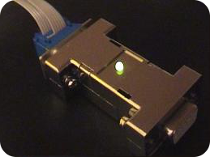

<p><strong>OpenBDC</strong> is a BDM pod for MCU's that use <a href="http://www.nxp.com">NXP's</a> single wire debug interface. The OpenBDC firmware is based on the <a href="//hotwolf.github.io/S12CForth">S12CForth project</a> allowing the pod to be used as simple protocoll translater, as well as high level debugger. The project started out with it's own hardware, a low-cost MC9S12C128 based debug interface (the original OpenBDC pod).</p>
</img>

{% include LatestPosts.html %}
